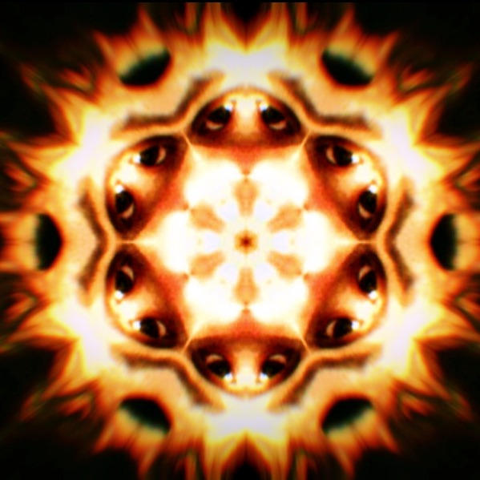

Origins of Dirt and God
Rapping around the controversial entropy of the existence of diagrams of sentences that ramble on for days I am playing by the rules telling no story just letting the words come out of me as I am defining my reason for being in these sentences as this is what I am good at just writing and the difference between writing and authorship is that writing has no plot its just when the words wont stop and I could cop a feel in between you and me and wrap my head around a mast head and defeat a diatribe one last time as I am coming to the conclusion that I need to find that thing that I am amazing at so that I can share my pomposity with the world around me because poetry is the best thing that ever came out of me and the world is voting republican and I forgot to vote and the last notes of the dying breeds of men and their wishes for their children that they forget about when they enter the job site is astounding to me as just so long as you are not working in a factory you are intelligentsia and its hard out there for a politician and what is that anyways as I could be the man that writes the letters that change the way people view letters as what do I need to say to define a generation in a way that makes it hard to believe that maybe I could be interviewing men my age and we could be exchanging energy and testing the waters to see who is who and did you see your job through and josh mandel is the man that is the secretary of state in the state of ohio and I am the author that is writing the winters snow and maybe there are men that are willing to jump through hoops for easy pay checks as the reasons for the divisions of labor are that the less intelligent men do the brutish work and the more intelligent men do the thought work because that is the way it has to be or else there would be nothing for the less intelligent to do as the intelligent men and women of this world run it or at least that is the way it is supposed to be but the way it really is couples with men paying police officers to do their job and the Abrahamic laws stop the lawsuits from championing as we are European ethics wrapped up in American culture as making money is the same as making noise and I could be discontinuing coins and they talk about god in Colorado and they talk about god in Massachusetts and they talk about god in ohio and they debate the existence of God.
I am here to settle the debate once and for all. The existence of God is real. You can in fact see God. In fact you can spell God out. G O D. That is what God looks like. Eleven words behind this word is what God looks like. You could see God twice in the line above me. God exists inside of Typography and that is the only place that God exists. This serves the purposes of proving the Atheists Wrong and the Theists Correct and Angers the Theists as that is not what they are talking about and Enhappys the Atheists in that they figured as much. At the Crucicble of God you find the Word God and with the Word was God and God was the original word that children spoke and men tremble before God and God is powerful to the illiterate as we never really know if anyone can really read. God is the most powerful word because in God there is literacy and a civilization advanced enough to create Glyphy Typography and cares enough to write down and God is the omnipotent set of glyphs that exists only in Typography and you cannot find God on the Moon and you cannot find God in the sun.
They say God created the Universe and maybe they are wrong as Theists want to label a dominant author of the universe with crafting the language in a certain way and Theists are just as bad as Atheists in the debate over god. What am I trying to say. The world belongs to typographers. They are the original people that took the time to craft the symbols that we use blatantly to represent our thought patterns and no one knows a typographer. They are mysterious figures that graduate from design schools and go off into worlds unknown to develop the tools we use to communicate with. It was a typographer that created God and that typographer carved God into a clay tablet and that man created the first word and the man that created the first word was with God and saw God working through such a being and that being that wrote God first and crafted the words of God was a typographer and the realm of typography is the only realm you will see God working.
All poetry aside, I propose this as a meeting ground that is actually a correct answer. In a world where Priests and Rabbis and Muslim Clerics state that there is a God. I would like to point out that they are correct. I would also like to point out that Atheists are incorrect when they state there is no God as there is. The word “GOD” exists. Those three symbols that rest between those parehtnsises happen in fact to be the God that exists. The only one we can be certain of that exists is that God. I would imagine that a Theist would think God would be greater than this and an Atheist would huff and say well that is all that is.
I would like to point out something. I am comfortable with this God. I marvel at this God. I marvel at civilization that developed language. God exists only in typography ergo language. You can say you are God to possibly induce fear or respect from someone but in that you are utilizing God in the language. God is a sound, an image, a thought, for lack of a better concept, it is a meme. A device. God has been passed down through time as a means of developing people’s brains and allowing them to see into themselves. You can chant God you can draw God on paper but God is that which exists in a story. It is that which exists in language and communication and symbolic representation of thought. That is the extent of God. We want to place labels and use language to try and communicate that there was intelligence that created as an example dirt.
The typical creation debate is comprised of two men that are fighting over dirt. They are fighting over where the dirt came from. One man says that a super natural being with omnipotent powers in comparison to humans created dirt and the other man is trying to say that the dirt has always been there. They go to war and attempt to kill each other over such a message because the man that says God created the dirt has children that he wants to believe God created the dirt and the man that says the dirt has always been there has children and he wants them to believe that the dirt has always been there and these two men are fighting over the sounds that float through the air being ever so careful to develop buildings and lines of logic and stories and pop up books and universities and debates and all manner of show just to try and get their children to believe one way or the other. Either a mystical more powerful than human creature created the dirt or the dirt has always been there.
This is the debate that is religion. The men and the women of religion are fighting over dirt. That is the conversation that is religion. That is the crux that is the focal point of the religions of the world. They are fighting over dirt. They debate dirt endlessly. It is a never ending debate and at some point their children choose sides and there is money to be made talking about dirt and where the dirt came from and how old the dirt came and while all of this is going on there are crops growing from the dirt feeding the people that are working together to build an elaborate empire of novelty of cars and of computer and of coca cola all the while on the weekends they debate the existence of dirt and where it came from while the dirt is providing us with trees and animals and there are character composites for the types of people that debate that God created dirt and most of the time these people also hate men that see no trouble falling in love with another man and women that fall in love with another woman then you have the people that believe the dirt has always been here which in terms of debate and story telling and social organization are typically the most foul mouthed cannot get anything right mean spirited care nothing about human life type of people and these are the people that are staging impromptu debates over God where Christopher Hitchens spent his life earning a living talking about dirt and now he is back in the dirt and the dirt is where the conversation starts and ends.
I am impressed with the God inside of Typography. It suits me. I need no God that created anything. I need a God that we as humans created whose form existed before humans. There is more nuance in the word God than I can express over the course of my entire life. I see a picture of a man standing in a design studio staring at a wall debating with another man over whether the typography on this word God is beautiful enough, ugly enough, finite enough, italic enough.
I see the history of language and the history of typography as more beautiful than the history of what people do with typography. I see most people abusing typography and language and the people that abuse it the most have no idea what it is or what the world is like when you know what an ascender is or a serif.
There are people that know what serifs are and there are people that do not. There are people that know what sans serif means and there are people that do not. When you get interested in language and typography it changes your life and you know it’s an obscure interest to be interested in but its life changing in that you get to see where God really is. God is in the language and in knowing that you get to see the theatre of the Theist and the Theatre of the Atheists and for a brief moment if you are steady you get to understand that millions of people in their ignorance , have no idea what they are talking about but you know that common ground is always what is being looked for
So you propose that factually God exists. There is a God. There is a sound God and there is an English Typographic combination of Alphanumeric Glyphs that represent God. That is the God that exists whether I believe in God or not. It does not matter whether or not I believe in God because God exists.
So after a decade of wondering whether or not God exists. I had to admit that God did exist and that God is a word and that as amazing as I want god to be is as amazing as Words are and as small as God is is as small as words are.
I just know that God is real because God is the word that I can see.